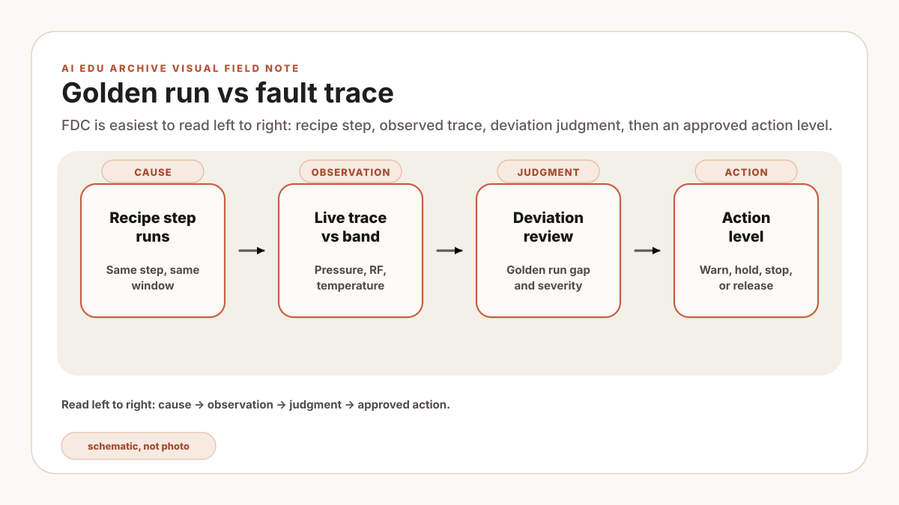

Start an FDC review with a trace contract, not an anomaly score. Write down the tag, unit, sample rate, clock source, recipe-step label, missing-data rule, baseline version, and alert owner. Fault Detection and Classification then has a concrete job: compare recorded equipment behavior with a defined reference and route the deviation for the right level of review.
That makes FDC an early evidence layer between a normal-looking tool state and later metrology. It complements SPC, metrology, and engineering review; it does not establish root cause or product disposition on its own.
An FDC alert is evidence for review. It does not by itself diagnose root cause, establish product impact, or authorize a hold or tool stop.
What FDC is really doing
A process run is not one flat time-series. It is a sequence of recipe steps: pump down, stabilize, gas flow, plasma strike, main etch, endpoint, purge, vent. Each step has different expected behavior. A pressure spike may be normal during one step and suspicious during another.
That is why beginner FDC should be understood as four jobs:
- Collect: capture relevant sensor traces with enough timestamp quality.
- Align: map those traces to recipe step, chamber, lot, wafer, and product context.
- Compare: measure distance from a healthy baseline or control band.
- Classify: connect the abnormal pattern to likely fault families and engineering actions.
If collection is weak, the model sees noise. If alignment is weak, the model compares the wrong moments. If baseline is weak, every normal variation looks suspicious. If classification is weak, engineers get an alarm but no clue.
Why traces need step alignment
The score from two similarly shaped hypothetical etch runs flags pressure amplitude after both traces are aligned at run start. Recipe events change the diagnosis: one run entered stabilization later, and the other had a delayed plasma strike. The apparent amplitude fault came from comparing different process moments. The revised method aligns by recipe-step boundary while preserving strike delay as its own timing feature. These are constructed traces, not plant measurements.
| Alignment method | When it helps | Failure mode |
|---|---|---|
| Run start time | Quick prototype; simple processes with stable timing. | Step drift creates fake differences. |
| Recipe step | Most useful first production method. | Step labels must be consistent across recipe revisions. |
| Event markers | Useful around plasma strike, endpoint, valve transition, chamber state change. | Missing or delayed events can shift the comparison. |
| Dynamic time warping | Helpful when shape matters more than exact duration. | Can hide timing problems if used carelessly. |
| Item | Example condition | Acceptance check | Owner |
|---|---|---|---|
| Trace | Pressure in kPa and RF reflected power in W, sampled at 10 Hz | Units, calibration status, missing samples, and clock source recorded | Equipment engineering |
| Context | Tool, chamber, run, recipe revision, step label, product family, maintenance state | Every scored window joins to approved context or is excluded with a reason | Equipment and process engineering |
| Alignment | Recipe-step boundary, then elapsed time within step | Plasma-strike delay remains a timing feature rather than being warped away | Process engineering |
| Missing data | Reject a step window with more than 1% missing samples | Threshold tested against sensor behavior and recorded as an example starting value | Equipment engineering |
Golden runs and fault signatures
A golden baseline is a versioned reference set, not a claim that one run is perfect. Define inclusion and exclusion rules using product disposition, chamber state, recipe revision, metrology, alarm history, and the time interval represented. Keep the selected run IDs so another reviewer can reproduce the baseline.
A fault signature is a recurring abnormal pattern that engineers can name. For example:
- Pressure takes longer than usual to stabilize before plasma.
- RF reflected power rises during the main etch step.
- Endpoint signal shape shifts while metrology later shows CD drift.
- MFC response lags after setpoint change.
- Chamber temperature recovery after clean is slower than baseline.
| Decision | Example rule | Review condition | Owner |
|---|---|---|---|
| Inclusion | Same recipe revision and product family; approved metrology; no unresolved critical alarm | Process and equipment owners sign the run list | Process engineering |
| Exclusion | First three runs after chamber clean or any run with incomplete trace context | Exclusion remains visible in the baseline record | Equipment engineering |
| Reference band | Median trace with a robust dispersion band by recipe step | Back-test separately on reviewed normal and fault runs | FDC/model owner |
| Effective period | Valid until recipe, sensor, hardware, or maintenance-state definition changes | Change event triggers review, not automatic carryover | Process owner |
False alarms are not a detail
False positives consume review capacity and can hide useful alerts in queue noise. Set a budget in operational units, such as review alerts per chamber-day or minutes of review per shift, and pair it with a miss metric for known faults. A threshold is acceptable only under the test population and action level for which it was evaluated.
| Cause | What it looks like | Fix |
|---|---|---|
| Mixed products | Normal product difference looks like fault. | Baseline by product or process family. |
| Recipe revision drift | Released change triggers old limit. | Version limits with recipe revision. |
| Maintenance state | Post-PM behavior looks abnormal but is expected. | Add PM/chamber state to context. |
| Sensor noise | One noisy tag dominates alerting. | Filter, validate, or remove the tag. |
| Bad severity design | Every deviation becomes urgent. | Separate watch, review, hold, and stop levels. |
Define action levels and owners separately. A watch signal may enter a queue. A review signal may require equipment or process confirmation. A hold requires the site-authorized production or quality workflow. A tool stop requires separately engineered controls and authorization; the FDC score alone is not a functional-safety mechanism.
| Level | Example budget | Decision boundary | Owner |
|---|---|---|---|
| Watch | No more than 2 review items per chamber-day on the validation set | Record and trend; no plant-state change | FDC/model owner |
| Review | No more than 15 minutes of triage per shift for the scoped pilot | Engineer confirms, rejects, or escalates with evidence | Equipment/process engineering |
| Hold proposal | Budget set from miss cost and approved workflow, not from this example | Authorized production or quality principal decides | Production/quality |
| Tool stop | Outside this instructional FDC design | Use independently validated site controls | Equipment and safety owners |
Move the FDC threshold
See how one alarm limit changes false alarms and known-fault detection.
Illustrative dataset: 20 engineer-reviewed normal runs and 4 known faults, expressed as standardized deviation from a golden-run baseline. These are teaching values, not measurements from a production tool.
A first pilot checklist
For a first FDC pilot, choose a narrow process and a fault family with reviewable evidence. Broader coverage can follow after the baseline, alert budget, owner response, and change triggers are measured.
One module, one tool type, one recipe family, one fault family, and one review-only action path. This is a scoping example, not a claim that the same boundary fits every site.
- Scope: define tool type, chambers, recipe family, product family, and target fault.
- Data: list trace tags, alarm codes, recipe revision, metrology target, and maintenance context.
- Baseline: select golden runs with explicit inclusion and exclusion rules.
- Labels: collect known fault examples and engineer-reviewed normal examples.
- Action: define watch, review, hold, or stop response before deployment.
- Review: measure false alarms, misses, engineer override, and time saved.
Pass: move to shadow mode only when every scored window has approved context; the baseline run list is reproducible; known-fault and reviewed-normal slices are separate; and the measured review load stays inside the site-approved budget. Stop: pause release when recipe revisions are mixed, timing faults are warped away, the miss slice is too small to support the intended claim, or no owner accepts an alert. Limit: shadow-mode performance applies only to the recorded tools, products, revisions, and action level.
How this connects to AI
FDC can use simple rules, statistics, classical ML, deep learning, or hybrid systems. AI is not the point. The point is controlled detection. Start with understandable baselines, then add complexity only where it earns its keep.
This is also where LLM/RAG systems become useful companions. RAG can retrieve the troubleshooting guide for a detected pattern. An agent can open a read-only view of recent alarms and PM history. A knowledge graph can connect chamber, recipe, lot, and failure history. But none of that replaces the FDC basics: trace quality, step alignment, golden runs, fault signatures, and false-alarm discipline.
The deployment question is: under the recorded trace, alignment, baseline, and validation conditions, can the system provide reviewable evidence within the approved false-positive budget? Run that question in shadow mode with the FDC/model owner and process and equipment reviewers. Then use the FAB AI glossary to map any added RAG, agent, or audit component to an artifact and owner. Shadow results remain advisory and do not authorize plant-state changes.